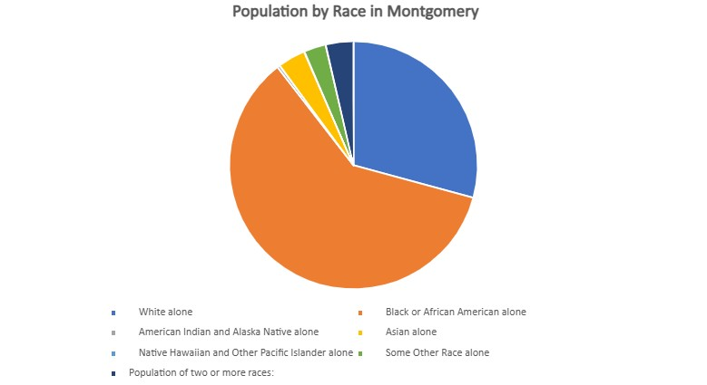
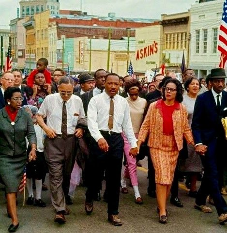

About Montgomery
The capital city of Alabama is located in the central region of the state along the Alabama River. The city population of approximately 200,000 residents makes it one of Alabama's largest urban centers. Montgomery is home to the Alabama State Capitol and has long served as a cultural, political, and economic hub. This urban city offers a mix of historic landmarks, government institutions, and modern development. The average income in Montgomery is about $57,300, which is slightly below the statewide average of about $62,000, reflecting both the city's economic diversity and its ongoing efforts toward growth.
Cost of Living
Montgomery's cost of living is lower than the national average, making it affordable for families and young professionals. Housing is especially attractive compared to national norms, while utilities and groceries run closer to average.
- Overall Index: Around 13% below the U.S. average.
- Housing: Typically 25-30% cheaper than national average.
- Purchasing Power: On the Regional Price Parity scale, Montgomery scores around 89, meaning a dollar spent there buys about 12% more than the U.S. average.
Things to do in Montgomery
History & Landmarks
- Alabama State Capitol: Historic site where Jefferson Davis was sworn in as president of the Confederacy and later a key site in the Civil Rights Movement.
- Civil Rights Memorial & Center: Honors those who died in the struggle for equality and explores the legacy of the movement.
- Dexter Avenue King Memorial Baptist Church: Where Dr. Martin Luther King Jr. once pastored during the Montgomery Bus Boycott.
Parks & Outdoor Spaces
- Riverfront Park: A scenic downtown park along the Alabama River with concerts, trails, and family activities.
- Blount Cultural Park: Home to gardens, walking trails, and the Alabama Shakespeare Festival.
- Lagoon Park: Offers sports facilities, golf, and outdoor recreation.
Arts & Culture
- Alabama Shakespeare Festival: One of the largest Shakespeare festivals in the world, hosting diverse stage productions.
- Montgomery Museum of Fine Arts: Features American art, Southern regional pieces, and traveling exhibits.
- The Legacy Museum & National Memorial for Peace and Justice: Powerful institutions addressing slavery, racial injustice, and the history of lynching in America.
History
Founding and Early Years
Montgomery began as two separate riverfront settlements: Alabama Town and New Philadelphia. They were founded by General John Scott and Andrew Dexter, respectively. Amid competition for settlers, the adjacent towns merged on December 3, 1819, to officially become Montgomery, named in honor of Revolutionary War hero Major General Richard Montgomery. This happened just eleven days before Alabama was admitted to the Union.
Within a few years, Montgomery became a vital hub for the region's booming cotton trade, leveraging steamboat access via the Alabama River. The city was designated as the county seat in 1822, and the first courthouse was constructed in the city's Court Square, which also was a spot to one of the largest slave markets in the South.
Civil War Era
In 1861, Montgomery briefly served as the first capital of the Confederacy, with the Alabama State Capitol hosting Jefferson Davis's inauguration. Later that year, the capital was moved to Richmond, Virginia, but Montgomery remained an important Confederate city
Civil Rights Movement
Montgomery played a central role in the mid-20th century Civil Rights Movement. In 1955, Rosa Parks's refusal to give up her bus seat sparked the Montgomery Bus Boycott, a year- long protest led in part by Dr. Martin Luther King Jr. that ended segregation on city buses. The city was also a key site in the Freedom Riders campaign of 1961 and the Selma- to-Montgomery marches of 1965, which culminated at the State Capitol and helped lead to the Voting Rights Act.
Weather
Montgomery has a humid subtropical climate with hot, humid summers and mild winters.
- Average Summer Highs: Upper 80s to low 90s degrees Farenheit
- Average Winter Highs: Mid 50s to 60s degrees Farenheit
- Rainfall: About 52 inches annually, with frequent summer thunderstorms
Colleges & Universities
- Alabama State University: A historically Black universtity with strong programs in education, arts, and sciences.
- Troy University - Montgomery Campus: A liberal arts college affiliated with the United Methodist Church.
- Huntington College: A liberal arts college affiliated with the United Methodist Church.
- Faulkner University: A private Christian university offering law, business, and liberal arts programs.
- Auburn University at Montgomery: A branch campus of Auburn University offering diverse academic programs.
Education Attainment of Montgomery City Residents 25+ (U.S. Census Bureau 2023)
- High school diploma or higher: ~88%
- Bachelor's degree or higher: ~31%
- Graduate or professional degree: ~11%